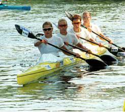

Az olimpiai aranynégyes |
|||||||||
|---|---|---|---|---|---|---|---|---|---|
| Már az első olimpiai válogatón eldőlt, hogy az arany Négyese mindenképpen olimpiai résztvevő lesz. Az ugyancsak olimpiai címvédő férfi kajakkvartetthez hasonlóan megvédték, ugyanis megnyerték a szolnoki viadalt és ez azt jelenti, hogy nekik már nincs szükségük további bizonyításra. Szabó Szilvia, Viski Erzsébet, Kőbán Rita és Kovács Katalin a válogatón több mint négy másodpercet vert a mögöttük célba sikló hajókra. Teljesítményük azért is figyelemre méltó, mert a heti 11 edzésből egyelőre még csak őt-hat jut a négyesre. A jelek szerint azonban ez is elég - a kvartett tagjai korábbi sikereik kivívásakor már összeszoktak és az idén már csak formában kell tartani magukat. Ez a szakemberek szerint mindenképpen jó jel Sydney előtt. Az Arany Négyes vezéregyénisége, Kőbán Rita egyébként egyesben is nyert: "Maga a csoda, hogy győztem, még én is meglepődtem!" - mondta az olimpiai- és világbajnok a befutó után. Később azt is elárulta, hogy a felkészülés eddig nem ment gondok nélkül. Előbb alvászavarai gátolták a megfelelő pihenést, azután pedig két hétig még gyomorrontással is bajlódott. | |||||||||
| Szabó Szilvia | Viski Erzsébet | Kőbán Rita | Kovács Katalin | ||||||
